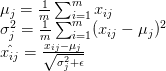
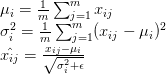
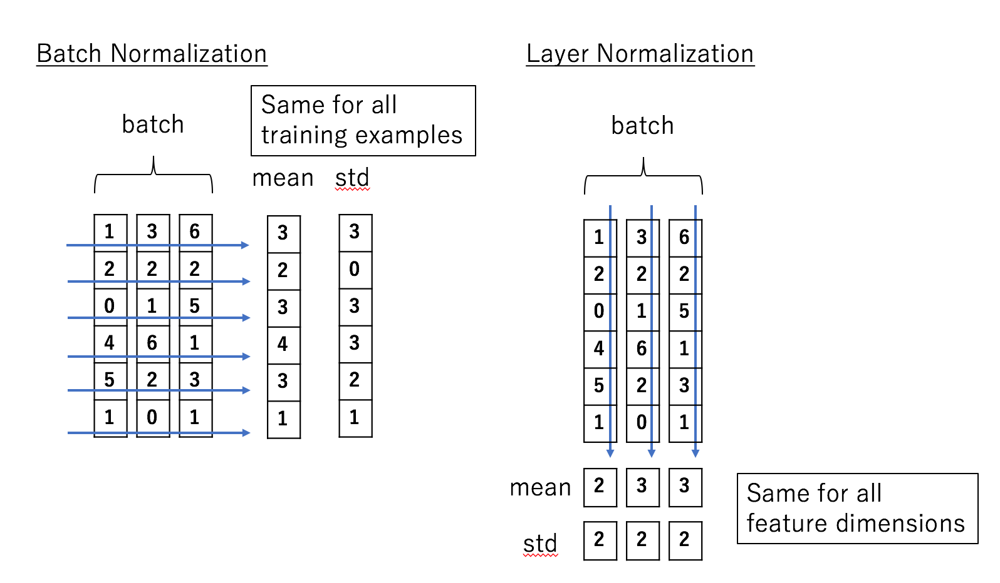

Weight Normalization
Weight normalization is a method developed by Open AI that, instead of normalizing the mini-batch, normalizes the weights of the layer.
Weight normalization reparameterizes the weights of any layer in the neural network in the following way:
Similar to batch normalization, weight normalization does not reduce the expressive power of the network. What it does is it separates the norm of the weight vector from its direction. It then optimizes both and using gradient descent. This change in learning dynamics makes optimization easier, as I have explained in the previous post.
Advantages
Other than the mean and variance being independent of the batch, weight normalization is often much faster than batch normalization. In convolutional neural networks, the number of weights tends to be far smaller than the number of inputs, meaning weight normalization is computationally cheaper compared to batch normalization. Batch normalization requires passing through all the elements of the input, which can be extremely expensive, especially when the dimensionality of the input is high, such as in the case of images. Convolutions use the same filter at multiple locations, so a pass through the weights is a lot faster.
Although weight normalization on its own can assist training, the authors of the paper proposed using a method called "mean-only batch normalization" in conjunction with weight normalization. This method is the same as batch normalization except it does not divide the inputs by the standard deviation or rescale them. Though this method counteracts some of the computational speed-up of weight normalization, it is cheaper than batch-normalization since it does not need to compute the standard deviations. The authors claim that this method provides the following benefits:
It makes the mean of the activations independent from Weight normalization independently cannot isolate the mean of the activations from the weights of the layer, causing high-level dependencies between the means of each layer. Mean-only batch normalization can resolve this problem.
It adds "gentler noise" to the activations
One of the side-effects of batch normalization is that it adds some stochastic noise to the activations as a result of using noisy estimates computed on the mini-batches. This has a regularization effect in some applications but can be potentially harmful in some noise-sensitive domains like reinforcement learning. The noise caused by the mean estimations, however, are "gentler" since the law of large numbers ensures the mean of the activations is approximately normally distributed.
The experimental results of the paper show that weight normalization combined with mean-only batch normalization achieves the best results on CIFAR-10, an image classification dataset. For detailed experimental results, please refer to the original paper.
3. Layer Normalization
Layer normalization is a method developed by Geoffery Hinton. Compared to weight normalization, layer normalization is slightly harder to grasp intuitively.
To understand layer normalization, recall that a mini-batch consists of multiple examples with the same number of features. Mini-batches are matrices - or tensors if each input is multi-dimensional - where one axis corresponds to the batch and the other axis - or axes - correspond to the feature dimensions.
Batch normalization normalizes the input features across the batch dimension. The key feature of layer normalization is that it normalizes the inputs across the features.
The equations of batch normalization and layer normalization are deceptively similar:
Batch normalization:

Layer normalization:

where is the i,j-th element of the input, the first dimension represents the batch and the second represents the feature (I have modified the notation from the original papers to make the contrast clearer).
The difference becomes a bit clearer when we visualize it:

In batch normalization, the statistics are computed across the batch and are the same for each example in the batch. In contrast, in layer normalization, the statistics are computed across each feature and are independent of other examples.
This means that layer normalization is not a simple reparameterization of the network, unlike the case of weight normalization and batch normalization, which both have the same expressive power as an unnormalized neural network. A detailed discussion of the differences this creates involves a lot of math and is beyond the scope of this article, so if you are interested please refer to the original paper.
Advantages
The independence between inputs means that each input has a different normalization operation, allowing arbitrary mini-batch sizes to be used.
The experimental results show that layer normalization performs well for recurrent neural networks.